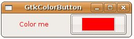
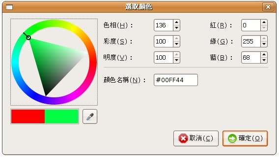

GtkColorButton 是一個外觀為目前選擇顏色的按鈕，按下時會出現選取顏色的對話方塊，您可以使用gtk_color_button_new()建立按鈕，或是使用 gtk_color_button_new_with_color()指定初始顏色建立按鈕，使用gtk_color_button_set_color ()或gtk_color_button_get_color()設定或取得目前的顏色，而這與一個GdkColor有關：
typedef struct {
guint32 pixel;
guint16 red;
guint16 green;
guint16 blue;
} GdkColor;
guint32 pixel;
guint16 red;
guint16 green;
guint16 blue;
} GdkColor;
從GdkColor的成員名稱上可以了解到，GdkColor包括的有像素、紅、綠、藍資訊，可指定的值為0到65535，例如指定RGB資訊的話：
GdkColor color;
color.red = 65535;
color.green = 65535;
color.blue = 65535;
color.red = 65535;
color.green = 65535;
color.blue = 65535;
如果您想要使用"#FFFFFF"這樣的方式來指定顏色的話，則可以使用gdk_color_parse()函式，例如：
gdk_color_parse("FF0000", &color);
下面這個範例，可以使用GtkColorButton來選擇顏色，並根據所選取的顏色來改變文字的顏色，文字是使用GtkLabel，要改變GtkLabel文字的顏色，則使用gtk_widget_modify_fg()函式：
- gtk_color_button_demo.c
#include <gtk/gtk.h>
void color_changed(GtkColorButton *button, gpointer data) {
GdkColor color;
gtk_color_button_get_color(button, &color);
gtk_widget_modify_fg(GTK_WIDGET(data), GTK_STATE_NORMAL, &color);
}
int main(int argc, char *argv[]) {
GtkWidget *window;
GtkWidget *label;
GtkWidget *button;
GtkWidget *box;
GdkColor color;
gtk_init(&argc, &argv);
window = gtk_window_new(GTK_WINDOW_TOPLEVEL);
gtk_window_set_title(GTK_WINDOW(window), "GtkColorButton");
gdk_color_parse("#FF0000", &color);
label = gtk_label_new("Color me");
gtk_widget_modify_fg(label, GTK_STATE_NORMAL, &color);
button = gtk_color_button_new_with_color(&color);
box = gtk_hbox_new(TRUE, 5);
gtk_box_pack_start(GTK_BOX(box), label, TRUE, TRUE, 5);
gtk_box_pack_start(GTK_BOX(box), button, TRUE, TRUE, 5);
gtk_container_add(GTK_CONTAINER(window), box);
g_signal_connect(GTK_OBJECT(window), "destroy",
G_CALLBACK(gtk_main_quit), NULL);
g_signal_connect(GTK_OBJECT(button), "color_set",
G_CALLBACK(color_changed), label);
gtk_widget_show_all(window);
gtk_main();
return 0;
}gtk_widget_modify_fg()函式的第二個參數 GtkStateType 設定為GTK_STATE_NORMAL，表示設定元件在一般狀態的前景色。一個執行時的畫面如下：

按下按鈕時所出現的對話方塊如下：

實際上該對話方塊即為GtkColorSelectionDialog，GtkColorSelectionDialog實際上是由 GtkColorSelection及GtkDialog組成，GtkColorSelectionDialog的colorsel成員就是指向GtkColorSelection。
GtkColorSelection是一個Widget，包括了色彩輪、色相（Hue）、彩度（Saturation）、明度（Value）、紅、綠、藍的輸入設定，您可以單獨立使用GtkColorSelection，或是簡單的利用GtkColorSelectionDialog。
下面這個程式直接使用GtkColorSelectionDialog，製作出類似上面範例的作用：
- gtk_color_selection_dialog_demo.c
#include <gtk/gtk.h>
void color_changed(GtkButton *button, gpointer label) {
GtkWidget *dialog =
gtk_color_selection_dialog_new ("GtkColorSelectionDialog");
// 取得GtkColorSelection
GtkWidget *colorsel = GTK_COLOR_SELECTION_DIALOG (dialog)->colorsel;
// 取得GtkStyle，這是為了接下來可以取得背景資訊
GtkStyle *style = gtk_widget_get_style(GTK_WIDGET(button));
// GtkStyle的bg成員可以取得背景資訊
GdkColor color = style->bg[GTK_STATE_NORMAL];
// 設定GtkColorSelection 出現時的目前顏色
gtk_color_selection_set_current_color(
GTK_COLOR_SELECTION(colorsel), &color);
gtk_dialog_run(GTK_DIALOG(dialog));
// 設定GtkColorSelection 的目前顏色
gtk_color_selection_get_current_color(
GTK_COLOR_SELECTION(colorsel), &color);
// 修改按鈕背景色
gtk_widget_modify_bg(GTK_WIDGET(button), GTK_STATE_NORMAL, &color);
// 修改GtkLabel前景色
gtk_widget_modify_fg(GTK_WIDGET(label), GTK_STATE_NORMAL, &color);
gtk_widget_destroy(dialog);
}
int main(int argc, char *argv[]) {
GtkWidget *window;
GtkWidget *label;
GtkWidget *button;
GtkWidget *box;
GdkColor color;
gtk_init(&argc, &argv);
window = gtk_window_new(GTK_WINDOW_TOPLEVEL);
gtk_window_set_title(GTK_WINDOW(window), "GtkColorSelectionDialog");
gdk_color_parse("#FF0000", &color);
label = gtk_label_new("Color me");
gtk_widget_modify_fg(label, GTK_STATE_NORMAL, &color);
button = gtk_button_new();
// 修改按鈕背景色
gtk_widget_modify_bg(button, GTK_STATE_NORMAL, &color);
box = gtk_hbox_new(TRUE, 5);
gtk_box_pack_start(GTK_BOX(box), label, TRUE, TRUE, 5);
gtk_box_pack_start(GTK_BOX(box), button, TRUE, TRUE, 5);
gtk_container_add(GTK_CONTAINER(window), box);
g_signal_connect(GTK_OBJECT(window), "destroy",
G_CALLBACK(gtk_main_quit), NULL);
g_signal_connect(GTK_OBJECT(button), "clicked",
G_CALLBACK(color_changed), label);
gtk_widget_show_all(window);
gtk_main();
return 0;
}